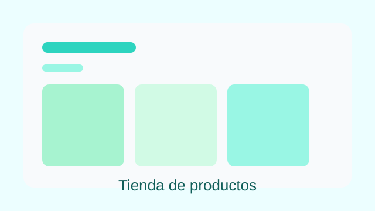
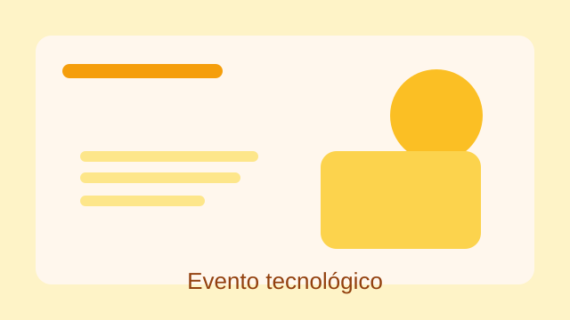
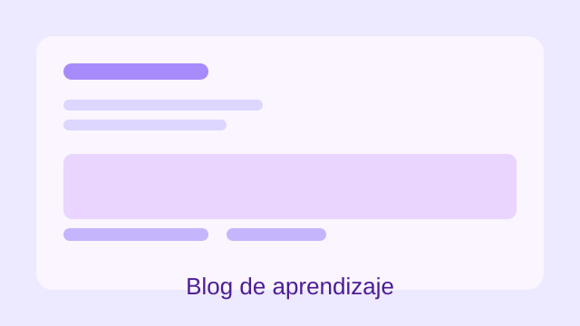
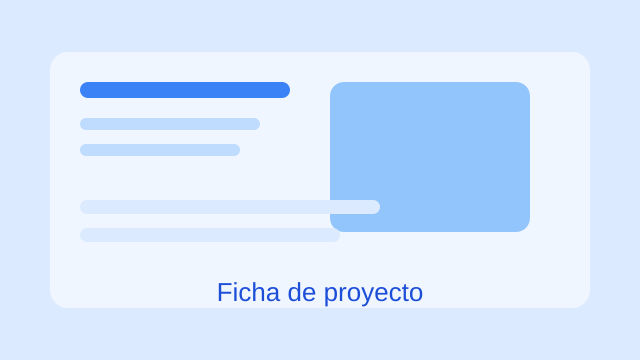
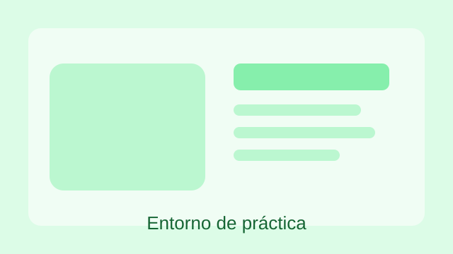

Web personal con estructura y contenido profesional.
Este proyecto consistió en crear un sitio web personal con una estructura semántica clara,
páginas de presentación, experiencia y contacto, y navegación entre secciones.
Qué aprendí: organización del contenido, uso de landmarks y planificación de páginas.
Tienda de productos

Landing page para una propuesta comercial.
Maqueté una tienda ficticia con bloques de producto, categorías, llamadas a la acción y
una composición visual enfocada en la navegación de usuario.
Qué aprendí: jerarquía visual, agrupación de contenido y mejora de la legibilidad.
Evento tecnológico

Web de un encuentro tecnológico escolar.
Diseñé una propuesta para un evento con portada, programa, formulario de inscripción y
datos de contacto, aplicando el uso de tablas y elementos interactivos.
Qué aprendí: estructura de contenido para eventos y validación de formularios.
Blog de aprendizaje

Proyecto de publicación de artículos y recursos.
Preparé un blog sencillo para compartir apuntes, reflexiones y recursos relacionados con
la programación y la tecnología.
Qué aprendí: cómo estructurar artículos y mejorar la experiencia de lectura.
Ficha de proyecto con imagen

Diseño de una ficha de resumen de un proyecto.
En este ejercicio organicé una ficha en la que se destacan objetivos, proceso y resultados,
reforzando la técnica de comunicar información de manera compacta y visual.
Qué aprendí: síntesis de información y uso eficiente de figuras, textos y enlaces.
Recurso de entorno de práctica

Proyecto puntual de experimentación con HTML y contenido.
Este trabajo sirvió como práctica libre para explorar la organización de elementos y la
relación entre texto, media y navegación dentro de una página.
Qué aprendí: probar distintas estructuras y reforzar el trabajo con accesibilidad.
Proyecto extra
También he preparado la web del encuentro tecnológico del centro como ejercicio extra.